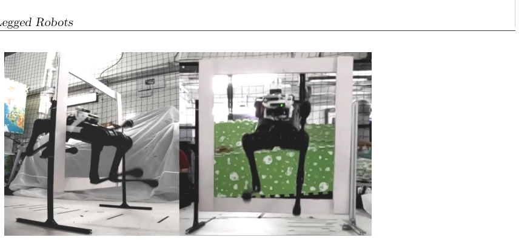
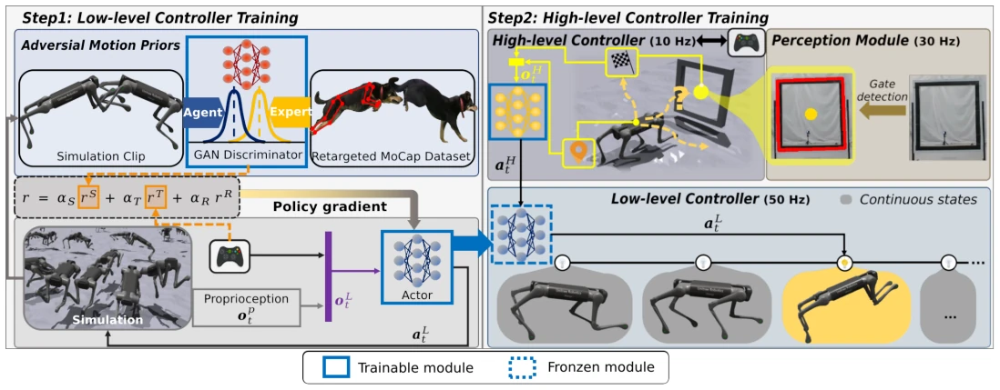
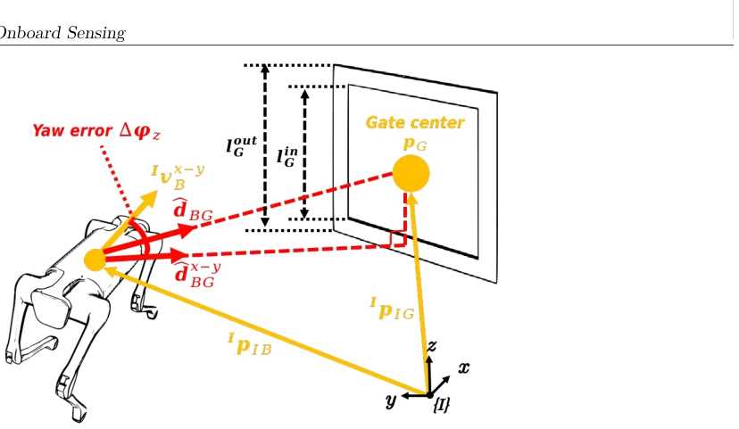
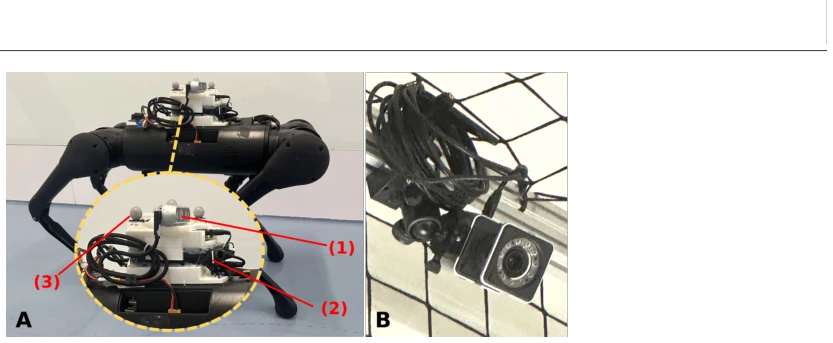
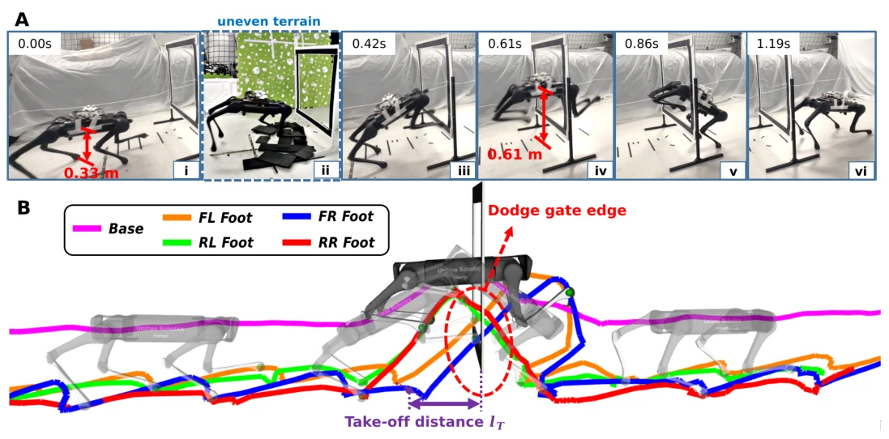
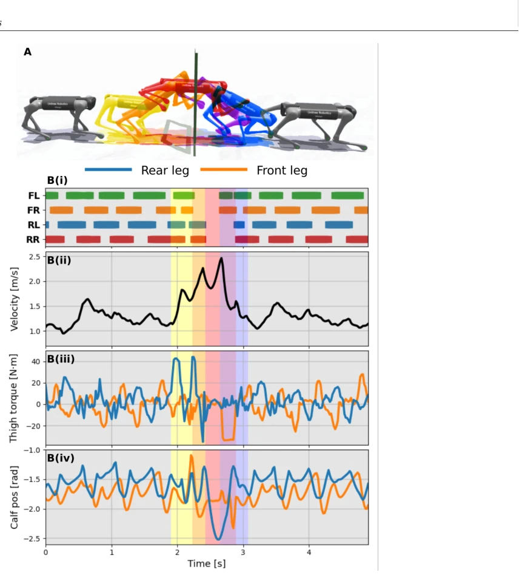
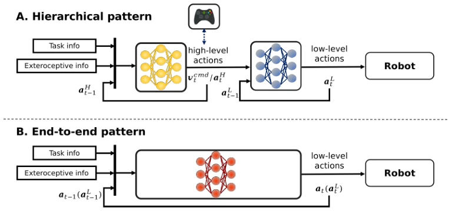
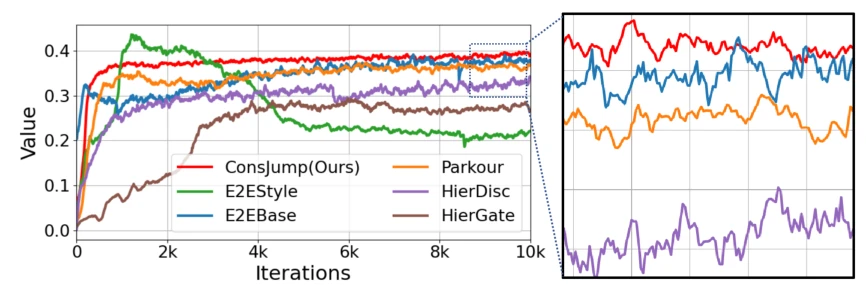
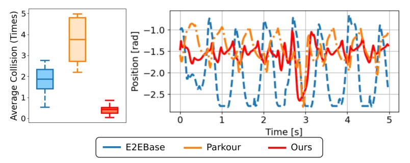
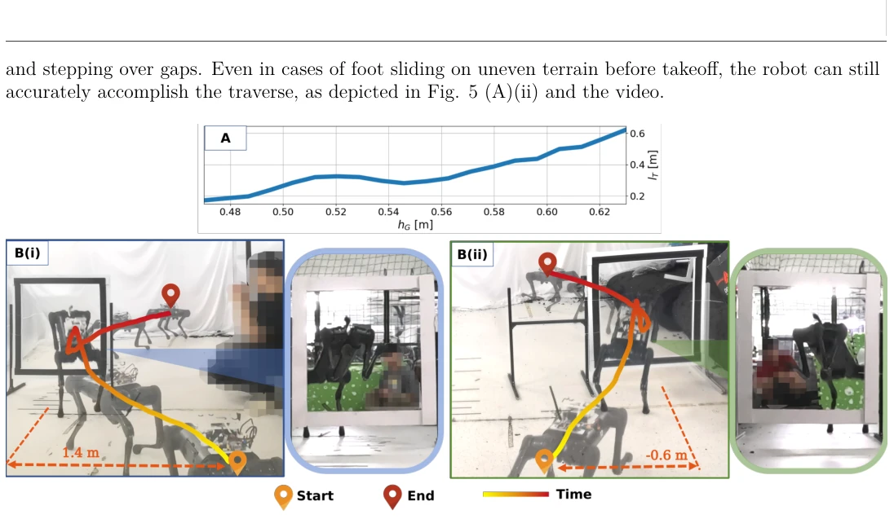

This work finally enables quadruped robots to "thread the needle" like kangaroos, but at the cost that the doorframe must be square-shaped. The authors employ hierarchical RL to decouple "how to jump" (low-level animal imitation) from "when to jump" (high-level decision-making), which is indeed more stable than end-to-end approaches. However, abstracting skills via velocity commands sacrifices fine-grained joint-level control, potentially causing the system to struggle when encountering non-biological motion requirements. While sim-to-real transfer is performed well, doorframe detection relies on specific shapes, raising doubts about generalization. Overall, this is an excellent work for physical robot dynamic jumping, but do not expect it to jump over irregular stones.
Executing explosive actions (such as jumping through narrow doors) within constrained spaces remains a challenge for quadruped robots. Traditional trajectory optimization (TO) is computationally slow and mostly offline [1, 2], making it difficult to cope with real-time dynamic constraints. Existing RL methods are often constrained by preset gaits [9] or require complex reward design to trigger jumping [10]. While animals can utilize dynamic maneuvers to traverse narrow spaces, robots lack sufficient decision-making capabilities to determine the optimal takeoff timing. Existing parkour methods mostly focus on landing spots [6, 23], ignoring aerial constrained constraints. This paper aims to fill this gap and achieve autonomous agile aerial traversal.

Figure 1: Legged robots require highly aggressive locomotion skills and perception when they jump through a narrow space that is comparable with their body size.
A hierarchical RL framework (ConsJump) is proposed. The low-level policy imitates animal motion data (such as running, jumping) through adversarial RL, learning a diverse skill library based on velocity commands to ensure actions are natural and biomechanically compliant. The high-level policy (10Hz) receives visual perception (doorframe position/size) and proprioceptive perception, outputting velocity commands to the low-level. The perception module utilizes an RGB-D camera to detect doorframe geometric features. The low-level policy is frozen, while the high-level optimizes traversal rewards via RL. This design allows the high-level to only master skill sequences, reducing the difficulty of action space search, while retaining the low-level's fine control over physical constraints. Specifically, the low-level adopts GAN-style training to optimize style rewards, imitating real animal motion; the high-level state space includes doorframe relative position and yaw angle error, with the action space comprising linear and angular velocity commands. During training, the high-level frequency is lower than the low-level to ensure command smoothness. In physical robot deployment, perception and the controller run asynchronously, communicating via ROS nodes, achieving seamless sim-to-real transfer.

Figure 2: The schematic of the proposed training methodology. In step 1, a low-level locomotion policy is trained using adversarial RL, which guides the learning agent to track the command velocity as well as imitate the motion primitives. In step 2, the locomotion policy is frozen, and a high-level policy is trained to generate the command velocity at a lower frequency. The high-level module receives visual detection results to identify the gate information. When the command actions provided by the high-level policy change, the low-level policy implicitly generates the corresponding skills accordingly.

Figure 3: Illustration of the model used in the high-level controller training. The sketch shows the components that determine the relative posi- tion of the robot w.r.t the gate.
Validated on the Unitree Aliengo physical robot. Comparison baselines include E2EStyle, E2EBase, Parkour [6], and hierarchical methods HierGate [17], HierDisc [18]. Metrics cover collision rate, joint smoothness, and task success rate. Results show that the hierarchical architecture significantly reduces collisions, exhibits smaller joint oscillation, and outperforms end-to-end methods. Ablation experiments demonstrate that skill imitation is crucial for stability. The system can also adapt to steps, gaps, and doorframe position changes, verifying the scalability of the high-level module.

Figure 4: Real-hardware setup: (A) (1) Forward-facing Intel D435i depth camera, (2) Intel NUC onboard computer, (3) VICON marker, which all mounted on a Unitree Aliengo weighing 22 kg. (B) VICON motion capture (MoCap) system, which provides the robot’s pose information. The hardware tests are all conducted in a 6.0m × 3.0m MoCap venue.

Figure 5: (A) The snapshots are taken from the real deployment of the proposed pipeline on a real Unitree Aliengo robot. The robot detects the gate size and position via onboard sensing. Then, the controllers determine the suitable skills and switching times that enable robots to jump through the gate. (ii) showcases the special case when taking off on uneven terrain. (B) The visualization of the base and foot trajectories in (A)’s test. The high-level policy fully leverages the low-level control policy capability, guiding the foot end-effectors to dodge the gate edge autonomously.

Figure 6: (A) Illustration of the continuously varied skills during the whole traversal process. The marked colors correspond to the time periods in the below profiles. (B(i)) Gait. (B(ii)) Base velocity. (B(iii)) Torque of front and rear thigh motors. (B(iv)) Pose of front and rear calf joints.

Figure 7: Hierarchical (A) and End-to-end (B) control architecture used for implementations.

Figure 8: Learning curves of compared algorithms. Because of differences in reward setups between [6] and ours, we recalculate the task rewards during training and log them for comparison only.

Figure 9: The average collision (Left) and measured positions of the calf joint (Right) during the traversal process.

Figure 10: ConsJump is adaptive to scenarios with varying gate positions. (A) The function of takeoff distances 𝑙𝑇in relation to gate heights ℎ𝐺. (B) The full base trajectories and the front views are demonstrated. Please refer to the linked video for more tests on gate position adapt- ability.